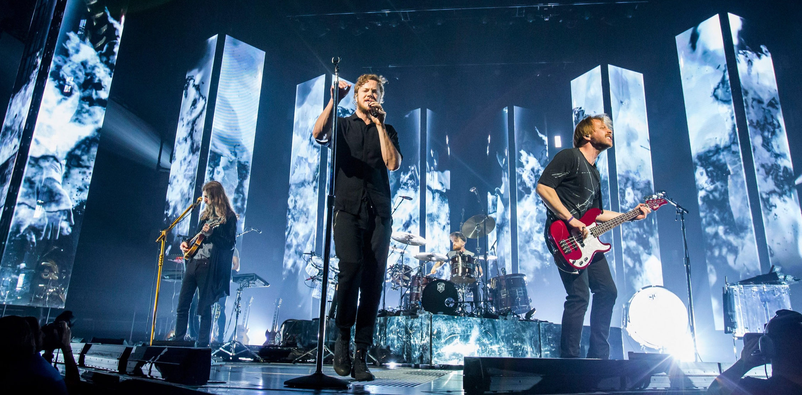

Imagine Dragons
Es una banda estadounidense de rock, compuesta por Dan Reynolds (vocalista), Wayne Sermon(guitarrista), Ben McKee (bajista) y Daniel Platzman (baterista).
Por Jonathan Acosta
El primer trabajo discográfico, uno homónimo llamado Imagine Dragons, llegó en 2010, seguido por "Hell and Silence" en el mismo año. No perdieron tiempo y lanzaron otro disco titulado "Its time", un año más tarde antes de que finalmente obtuvieran un contrato de grabación. Su popularidad aumentó, pasó a estar de boca en boca en poco tiempo, "Nuestra banda no existiría sin Las Vegas", Reynolds dijo una vez. "Es un gran lugar para que un artista comience."
EL PRIMER ÁLBUM
DE LA BANDA
Para septiembre de 2012, llega su álbum debut de manera profesional titulado "Night Visions", fue con la colaboración del productor de primera categoría Alex da Kid en los Westlake Recording Studios de West Hollywood, California, Estados Unidos. El álbum alcanzó el número 2 en el Hot 200, pero los sencillos como "Radioactive" y "Demons" fueron los que realmente les impulsó al estrellato. "Este disco ha pasado tres años en edición", dijo Reynolds de su primer álbum. "Nos parece que finalmente hemos creado algo que en lo que todos estamos realmente orgullosos y que espera que puedan inspirar a otros y ayudarles a sentirse un poco menos solos. Eso es lo que la música se trata. Es el mejor comunicador que conozco".
En abril de ese mismo año, lanzan el sencillo "It's Time”, el cual llegó al top cinco en las listas Billboard Alternative y Billboard Rock, y posterior a ello, lanzan el videoclip y comenzó a emitirse en todos los canales de MTV, la banda fue nombrada artista MTV PUSH de la semana, nominado en MTV Video Music Award en la categoría de "Best Rock Video", el sencillo de platino en RIAA en noviembre 2012 y fue usada para la BSO del reciente film "Las ventajas de ser invisible".
Tener depresión no es algo para burlarse o reírse. No es solo estar triste e intentar llamar la atención. Es algo real. Un montón de personas en el mundo son diagnosticados con depresión. Quiero decirles que los quiero y los entiendo. Hay vida más allá de lo gris. Continúen viviendo, hablen con alguien y vayan a un terapeuta que es algo hermoso, no es algo malo.
Dan Reynolds
Tener depresión no es algo para burlarse o reírse. No es solo estar triste e intentar llamar la atención. Es algo real. Un montón de personas en el mundo son diagnosticados con depresión. Quiero decirles que los quiero y los entiendo. Hay vida más allá de lo gris. Continúen viviendo, hablen con alguien y vayan a un terapeuta que es algo hermoso, no es algo malo.
Dan Reynolds
FUERA DEL
ESCENARIO
La parte sensible de la banda, se deja notar en la creación de una fundación para ayudar a jóvenes con cáncer en el año 2013, y la llamaron “Tyler Robinson Fundation”, la canción titulada “Demons” fue en base a esta experiencia, en el videoclip de la canción aparece Tyler Robinson en el final cantando la canción “It's Time” junto con Dan Reynolds. Imagine Dragons también lanzó la canción "I Love You All The Time" para beneficiar a las víctimas de los ataques terroristas en París.
A pesar de su rápido estrellato internacional, la banda mantiene una cultura de la humildad y creatividad. El cantante Dan Reynolds señaló una vez que Imagine Dragons es una "banda atípica", en la que su imagen diverge de la del grupo de rock medio. Dos de los cuatro miembros no están tatuados, y el grupo elige no asistir a las "afterpartys"; sobre las modas estereotipadas, Reynolds afirma que son "opciones de estilo de vida" y que aún así se mantiene el "espíritu del rock'n'roll". Cuando la banda optó por asistir a un "afterparty", notaron el uno al otro que "no pertenecían a ese lugar", ya que llegaron a pie entre limusinas y coches de lujo.
La depresión de Dan Reynolds fue uno de los temas del Lollapalooza Argentina 2018, al dar su show con Imagine Dragons. Dio un fuerte mensaje explicando la situación que vivió durante su adolescencia y cómo pudo superarlo, dando un mensaje esperanzador.